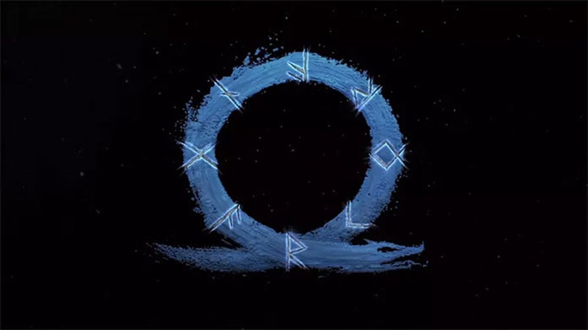
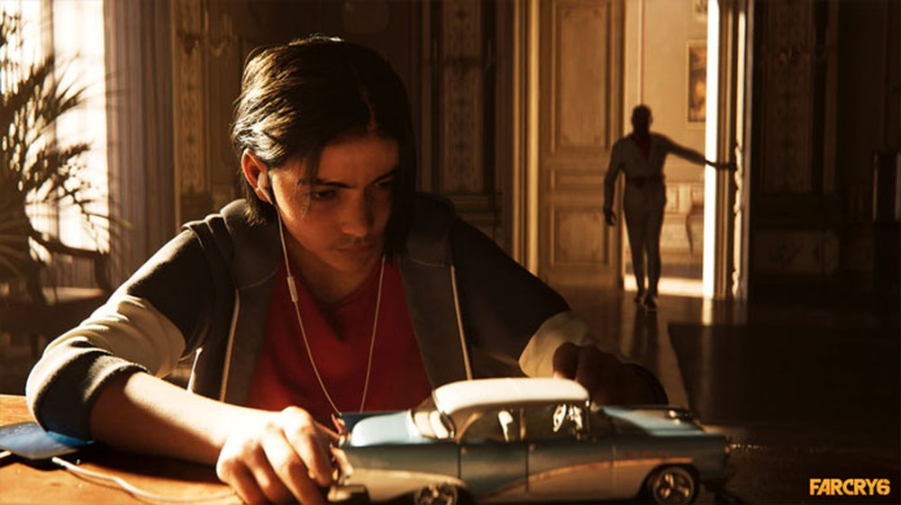
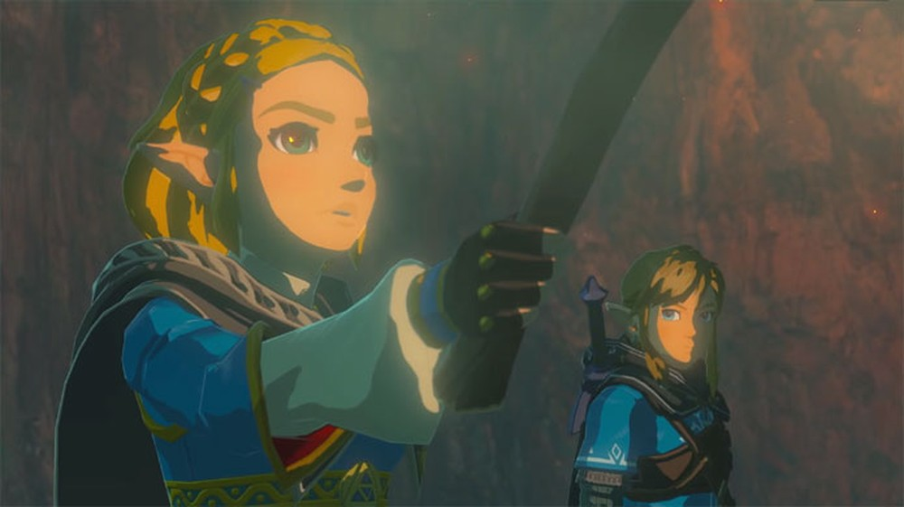
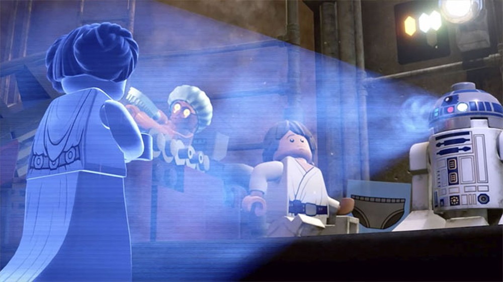
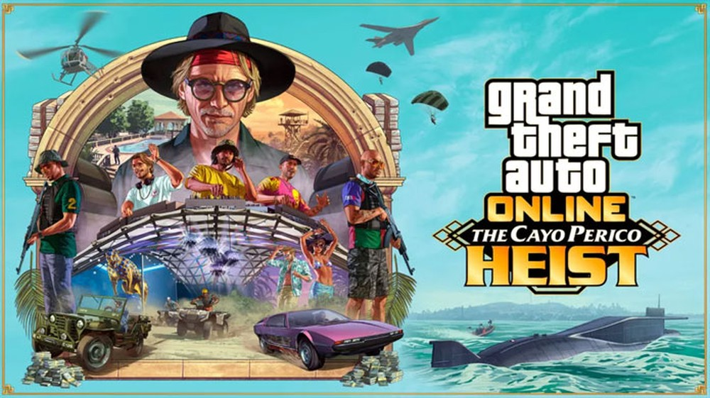
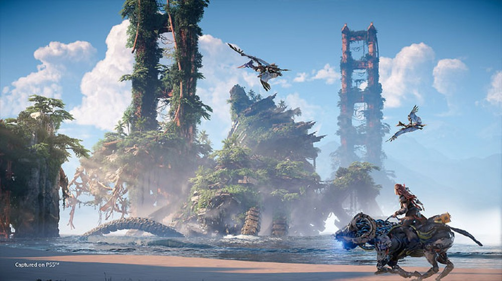

Lançamentos Aguardados
God of War: Ragnarok e Far Cry 6 são alguns dos jogos com data de lançamento prevista para o 2º semestre de 2021. Há ainda games mais incertos como GTA 6 e The Legend of Zelda: Breath of the Wild 2, que, apesar de não estarem confirmados, são muito aguardados pelos fãs e críticos de games.
Com a chegada da nova geração de consoles — PlayStation (PS5) e os Xbox Series X/S — no final de 2020, o próximo tem grandes chances de contar com games impressionantes. Confira, a seguir, alguns dos jogos mais esperados.
God of War: Ragnarok
Um novo God of War foi anunciado para o console de nova geração da Sony, durante o evento PlayStation 5 Showcase, em setembro de 2020. O game foi apelidado de "God of War: Ragnarok" pelos jogadores. Após a entrada da série na mitologia nórdica, com o título para PlayStation 4 (PS4),em 2018, Kratos e Atreus terão uma nova jornada com os eventos do Ragnarok.
mitologia, Ragnarok é uma série de eventos cataclísmicos e batalhas que levam à morte de vários deuses, situação com a qual o Fantasma de Esparta já tem certa experiência. Há rumores, também, de que uma versão do game pode ser lançada para PlayStation 4.
"Poucos detalhes foram divulgados sobre novo God of War, além de que terá conexão com o Ragnarok — Foto: Reprodução/PlayStation"
Desenvolvedor: Sony Santa Monica
Data de lançamento: 2021
Plataformas: PS5
Preço: entre R$ 299 e R$ 349
Far Cry 6
A saga Far Cry dará seu primeiro passo na nova geração de consoles com Far Cry 6, que apresentará o famoso ator Giancarlo Esposito no papel do ditador Antón Castillo, da ilha de Yara. O game apresenta um mundo aberto inspirado na ilha de Cuba, com a possibilidade de controlar Dani Rojas, um guerrilheiro que deseja derrubar o presidente e libertar seu povo. Além disso, será possível, também, escolher o gênero de Dani já no início do jogo.
"Em Far Cry 6, o jogador deve derrubar o ditador da ilha de Yara, interpretado por Giancarlo Esposito — Foto: Divulgação/Ubisoft"
Desenvolvedor: Ubisoft
Data de lançamento: 2021
Plataformas: PS4, XB, PS5, XBSX/S, PC
Preço: entre R$ 299 e R$ 349
The Legend of Zelda: Breath of the Wild 2
Normalmente, a Nintendo mantém segredo sobre o lançamento de seus jogos, e, muitas vezes, os fãs ficam sabendo apenas alguns meses antes de suas estreias. A sequência do aclamado The Legend of Zelda: Breath of The Wild não tem muitos detalhes confirmados por enquanto e permanece sem data de lançamento divulgada. No entanto, porque a franquia The Legend of Zelda completará 35 anos em 2021, muitos jogadores acreditam que o jogo sairá no próximo ano, como parte da celebração.
"The Legend of Zelda: Breath of the Wild 2 pode ter seu lançamento em 2021 no aniversário da franquia — Foto: Reprodução/Nintendo"
Desenvolvedor: Nintendo
Data de lançamento: indefinido
Plataformas: SW
Preço: R$ 299
LEGO Star Wars: The Skywalker Saga
A série LEGO terá um novo grande capítulo em 2021, baseado na saga de filmes Star Wars. Vários jogos da franquia já exploraram os mundos de Star Wars, no entanto, será a primeira vez, em "The Skywalker Saga", que um único jogo explorará todos os nove filmes. Parte da jogabilidade será diferente em relação a outros games LEGO, com seções de tiro em terceira pessoa.
"Todos os nove filmes da franquia poderão ser jogados em LEGO Star Wars: The Skywalker Saga — Foto: Reprodução/Star Wars"
Desenvolvedor: Traveller's Tales
Data de lançamento: outono de 2021
Plataformas: PS5, XBSX/S, PS4, XB, SW, PC
Preço: entre R$ 279 e R$ 349
GTA 6
Apesar de não haver evidências de que GTA 6 será lançado em 2021, sempre há rumores que sugerem que o game pode estar mais perto do que parece. Constantemente, usuários descobrem, em anúncios, segredos escondidos pela própria produtora Rockstar, além de jogos que apontam para o esperado sexto capítulo da franquia. GTA 5, pelo menos, já está com seu relançamento para PS5 e Xbox Series X/S confirmado para o segundo semestre de 2021, com otimizações e melhorias visuais.
"Recentemente GTA 5 recebeu uma grande atualização com "O Golpe de Cayo Perico" — Foto: Divulgação/Rockstar Games"
Desenvolvedor: Rockstar Games
Data de lançamento: indefinido
Plataformas: indefinido
Preço: indefinido
Horizon Forbidden West
A sequência de Horizon Zero Dawn trará de volta a protagonista Aloy, com uma nova aventura em um mundo ainda maior que o original. Será possível explorar ainda mais o mundo pós-apocalíptico do jogo, com a raça humana em ruínas, e criaturas robóticas como habitantes. Após salvar as tribos de sua região no primeiro jogo, Aloy precisará ir além do universo que conhece, em busca da cura de uma nova praga que ameaça a todos, e para compreender também a origem de misteriosas tempestades.
"Todos os nove filmes da franquia poderão ser jogados em LEGO Star Wars: The Skywalker Saga — Foto: Reprodução/Star Wars"
Desenvolvedor: Guerrilla Games
Data de lançamento: segundo semestre de 2021
Plataformas: PS5, PS4
Preço: entre R$ 299 e R$ 349